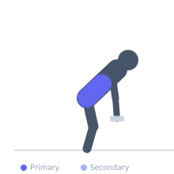
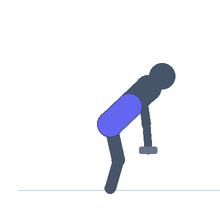

Exercise guide / Dumbbell Side Bend
Dumbbell Side Bend
The dumbbell side bend trains lateral flexion of the spine against a unilateral resistance load, primarily targeting the obliques and quadratus lumborum on the working side while the contralateral side resists gravitational pull isometrically. The exercise is commonly performed with a single dumbbell in one hand, allowing a full lateral range of motion. It is important to perform the exercise bilaterally to avoid asymmetrical development.
Primary muscles
internal oblique
external oblique
Secondary muscles
erector spinae
Stabilizers
transverse abdominis
Equipment
Dumbbell (Fixed)


Starting position
- Stand upright holding a dumbbell in one hand at the side, feet shoulder-width apart, free hand placed lightly behind the head or on the hip.
Setup
- Choose a moderate weight — excessive load encourages compensation through the hips rather than pure lateral spinal flexion.
Steps
- Step 1: Stand tall with the dumbbell at the side, spine neutral.
- Step 2: Laterally flex the spine toward the dumbbell side, lowering the weight along the outer thigh.
- Step 3: Return to upright by contracting the opposite-side obliques.
- Step 4: Optionally continue past neutral to the opposite side for a full range of motion bend.
- Step 5: Complete all reps then switch the dumbbell to the other hand.
Coaching cues
- Slide the dumbbell down the leg — no rotation
- Think of your spine as a hinge opening sideways
Breathing
- Inhale at neutral. Exhale as returning to upright.
Range of motion
- Full comfortable lateral flexion range on each side. Quality of movement over depth.
Tempo
- 2-1-2-0. Controlled in both directions.
Common mistakes
- Bending forward or backward instead of purely laterally
- Rotating the torso — the movement should be in the frontal plane only
Safety
- Use controlled movement — avoid lateral flexion under load with momentum
Training
- hypertrophy: 12–20 reps
- hypertrophy: 3–4 sets
- Rest: {'hypertrophy': 60}